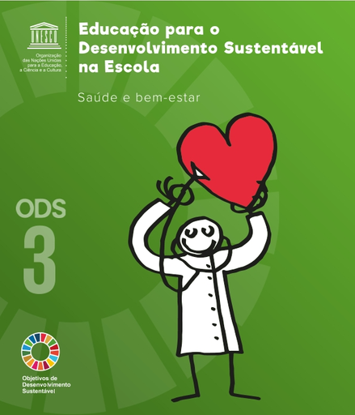

Desafios do ODS 3
Os desafios para alcançar o ODS 3 são numerosos e complexos. Incluem:
- Acesso limitado a serviços de saúde essenciais em regiões remotas.
- Combate a epidemias e doenças crônicas.
- Disparidades na saúde mental e acesso ao tratamento.
Impactos Visuais
Citações
"A saúde é um direito humano, não um privilégio." - afirmam Papa Francisco e diretor-geral da OMS
Mais Informações
Para mais detalhes, visite Organização Mundial da Saúde.
Perguntas Frequentes (FAQ)
Como posso contribuir para melhorar a saúde global?
Comece por apoiar políticas locais que promovam acesso equitativo aos cuidados de saúde.
Qual é o impacto da desigualdade de acesso à saúde?
A desigualdade no acesso à saúde pode levar a discrepâncias significativas na qualidade de vida e expectativa de vida entre diferentes grupos sociais e econômicos.
Por que é importante integrar a saúde mental nas políticas de saúde pública?
Integrar a saúde mental é crucial porque ajuda a reduzir o estigma e melhora o acesso ao tratamento, além de ser essencial para o bem-estar geral e a produtividade da população.
Como as mudanças climáticas afetam a saúde pública?
As mudanças climáticas afetam a saúde pública aumentando a frequência de eventos climáticos extremos, alterando padrões de doenças infecciosas e exacerbando condições de saúde crônicas devido a piores condições ambientais.